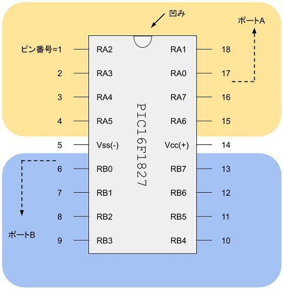

PIC講習/入出力
概要
本章では、デジタルの入出力の基礎を解説します。
重要語
入出力ピン
入力または出力に使えるピン
入出力ポート
8本ごとの入出力ピンのまとまり
デジタル入出力
High/Lowの2状態による入出力
必要語
レジスタ
数値を一時記憶する回路
バンク
128個分のレジスタ領域のまとまり
入出力ピン
入出力ピンは、文字通り、入力または出力の機能を持つピンです。
入出力ポート
入出力ピンは、8本ごとに入出力ポートI/O Port にまとめられています。

RA5
4番ピンには、RA5という名前がありますが、このピンは入力にしか使えません。
ピン設定
PICマイコンのピンは多機能なので、使う機能の指定も複雑です。
TRISA/TRISB
TRISA/TRISBは、ポートA/Bの各ピンについて、入出力のいずれかを指定するレジスタです。TRA命令とTRB命令で、Wレジスタから値を書き込めます。MOV命令に対する利点は、現在のバンクから変更する必要がない点です。
TRIS設定の例
COPY
COL . TRISA. $0C #バンク1
COL . TRISB. $0D
MBS . 1
MOV . %11101000 #RA3,RA5,RA6,RA7が入力、他は出力
MOV . TRISA
MBS . 0
MOV . %00001100 #RB2,RB3が入力、他は出力
TRB
ANSELA/ANSELB
ANSELA/ANSELBは、各ピンの入力がデジタルとアナログのいずれか選択するレジスタです。
ANSEL設定の例
COPY
COL . ANSELA. $0C #バンク3
COL . ANSELB. $0D
MBS . 3
CLR . ANSELA #すべてデジタル入力
CLR . ANSELB
MBS . 0 #バンクは忘れないうちに戻すこと
PORTA/PORTB
PORTA/PORTBは、対応するピンの入出力の値を表すレジスタです。
PORT入出力の例
COPY
COL . PORTA. $0C #バンク0
COL . PORTB. $0D
MOV . PORTA. W #ポートAの各ピンの電圧を読み込み
MOV . %10000100 #RB2,RB7にHigh、他にLowを出力
MOV . PORTB. F #ポートBに出力
PORTA/PORTBの問題点
POTRA/PORTBは、特定の使い方をすると、誤動作を起こします。BCF/BSF命令が、問題を引き起こすものとして知られています。BCF/BSFとPORTA/PORTBの組み合わせの誤作動の原因です。
LATA/LATB
LATA/LATBは、PORTA/PORTBの欠点を補うためにつけられたレジスタです。
LAT出力の例
COPY
COL . LATA. $0C #バンク2
COL . LATB. $0D
MSB. 2
BSF . LATA. 0 #RA0の出力をHighにする
#他のピンには影響しない
MSB. 0
実際の設定と入出力
PICのプログラムメモリは限られています。call a subroutine 、ということがあります。
CAL/RET命令
ところで、サブルーチンを実行した後は、どこに戻ればよいのでしょうか。GOT命令を使うわけにもいきません。CAL命令です。RET命令で戻りreturn from a subroutine ます。RETのジャンプ先は、スタックに保存されているアドレスなので、引数はありません。
スタック
スタックとはメモリの一つで、プログラムカウンタを保存できます。
サブルーチンの例
COPY
CAL . SRA #サブルーチンSRAを呼び出す
COL . SRA #サブルーチンSRAはここから
NOP #ここにサブルーチンの内容おい
CAL . SRB #別のサブルーチンを呼び出してもよい
RET #サブルーチンSRAはここで終わり
COL . SRB #サブルーチンSRBはここから
NOP
RET #ここまで